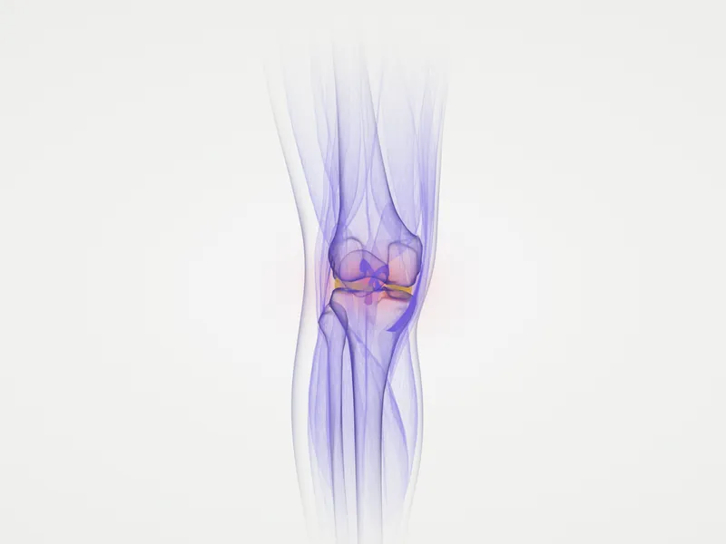
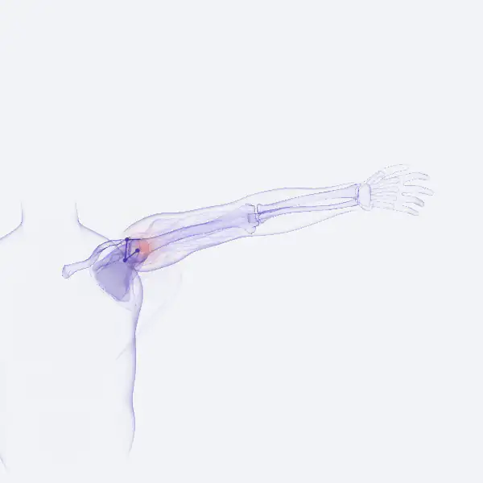
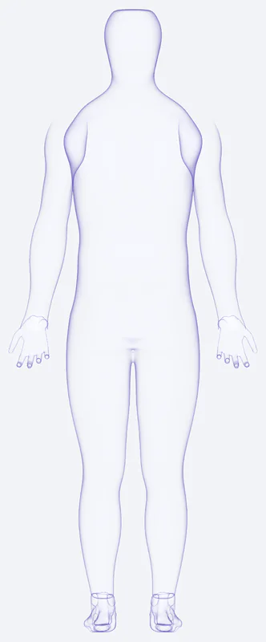
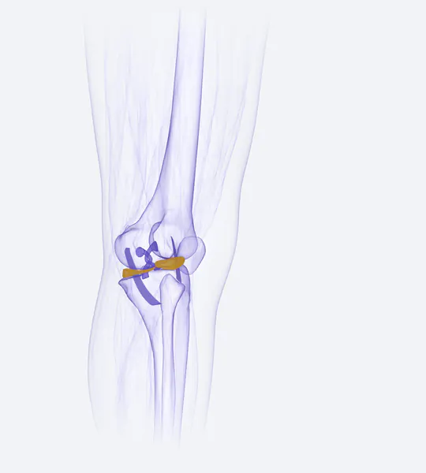
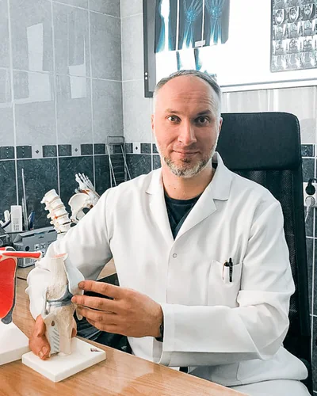
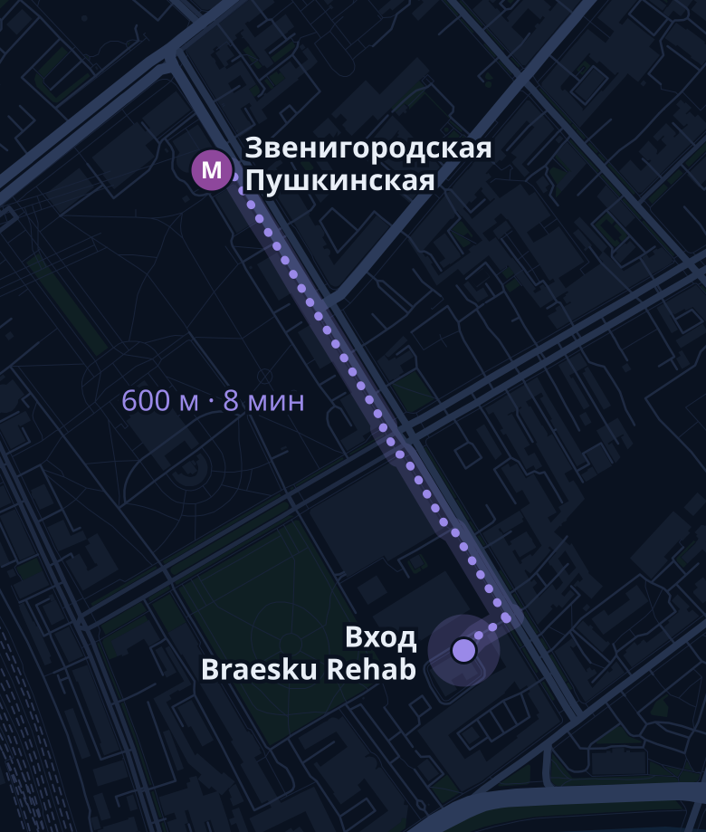

Упал, болит. Что дальше?
Если нет признаков из блока «Не ждите приёма», запишитесь на осмотр. Я посмотрю, нужен ли снимок, и подскажу, как беречь травмированное место до приёма.
Как проходит приёмОсмотрю, разберу снимки,
объясню диагноз простыми словами
и предложу план лечения.
Приём в «Клевер Рехаб», Санкт-Петербург, ул. Звенигородская, 7.
Пн–пт 09:00–22:00, сб–вс 10:00–20:00

При сильной боли после травмы, деформации или онемении не ждите приёма: звоните 103 или 112.Сильная боль? Звоните 103 или 112
Оперирую и лечу эти два сустава. По другим травмам опорно-двигательного аппарата провожу консультацию.


Если узнали себя хотя бы в одной строке, приём имеет смысл.
Это не диагноз. Причину определяют на приёме.
Записаться и разобратьсяПока едет скорая: обеспечьте покой, не вправляйте и не нагружайте конечность. Лёд прикладывайте через ткань.
Сайт не заменяет очную консультацию и не подходит для оказания помощи при острых состояниях.
Не нашли свой случай? Запишитесь, разберём на приёме.
Если нет признаков из блока «Не ждите приёма», запишитесь на осмотр. Я посмотрю, нужен ли снимок, и подскажу, как беречь травмированное место до приёма.
Как проходит приёмРазберём, что мешает, и решим, нужны ли обследования. Если у вас другая травма опорно-двигательного аппарата, проведу консультацию.
Колено и плечоРасскажите, чем занимаетесь и как часто. Составим план восстановления и обсудим, когда увеличивать нагрузки.
Что входит в приёмПринесите снимки и заключения. Объясню, что на них видно, какие есть варианты и чем они различаются.
Второе мнениеШесть этапов от первого вопроса до контрольного осмотра.
Спрошу, где болит, когда началось и что вы уже пробовали. Осмотрю сустав, проверю движения и чувствительность.
Вы получите: первое понимание, что происходит
Посмотрю ваши снимки, МРТ или КТ и анализы, если они есть. Если данных не хватает, скажу, что и зачем сделать. Лишнее не назначаю.
Вы получите: список обследований и объяснение, зачем каждое
Объясню диагноз без латыни. Расскажу, какие есть варианты лечения, что у каждого свои плюсы и риски. Выбираем вместе.
Вы получите: письменный план на руки [прислать: выдаётся ли письменное заключение]
Начинаем с выбранного плана. Часть лечения консервативная, для части может понадобиться артроскопия колена или плеча. [прислать: где проходят операции и что проводится на месте]
Вы получите: понятные шаги и сроки, что ждать
Объясню режим нагрузок и когда можно возвращаться к привычной жизни. [прислать: что входит в реабилитацию на приёме]
Вы получите: режим нагрузок и упражнения
Назначу повторный приём. Посмотрю, как идёт восстановление, и при необходимости изменю план.
Вы получите: решение: продолжать план или менять
Первичный приём: [прислать]
Записаться на приёмКонсультация, консервативное лечение и операции на колене и плече.
Первичный и повторный приём: осмотр, разбор жалоб, план.
Разрывы связок и менисков, восстановление внутрисуставных структур.
Нестабильность плечевого сустава, повреждения вращательной манжеты.
Операции через небольшие проколы, а также реконструктивные операции. Показания определяю после осмотра. [прислать: где проходят операции]
Консервативное лечение, план подбираю после осмотра и снимков.
Разбор рекомендованной операции или лечения по снимкам и осмотру.
Травмы опорно-двигательного аппарата вне колена и плеча: консультация.
Вам рекомендовали операцию, и вы не уверены?
Вы вправе узнать, какие есть варианты. Приходите со снимками и заключениями. Осмотрю, объясню, что на них видно, и расскажу, чем отличаются возможные решения. Назначать или отменять операцию я за вас не буду: решение остаётся за вами и вашим лечащим врачом.
Заочная оценка по снимкам: [прислать: есть или нет]


Принимаю в «Клевер Рехаб» в Санкт-Петербурге. Врачебный стаж более 15 лет. Оперирую и лечу консервативно: колено и плечо, от разрывов связок и менисков до остеоартроза. Курсы повышения квалификации перечислены ниже.
Документы можно посмотреть на приёме. [прислать: подтверждение, так ли это]
Возьмите всё из списка «Что взять с собой» в блоке «Как проходит приём». Главное: МРТ или КТ на диске или флешке. Если ничего нет, приходите так: скажу, что сделать.
Присылать заранее не нужно. Если снимки есть, возьмите их на приём. Если нет, после осмотра скажу, какое обследование нужно и зачем.
Колено и плечо. По другим травмам опорно-двигательного аппарата проведу консультацию.
Первичный: [прислать]. Повторный: [прислать].
Нет, я принимаю только взрослых пациентов.
Нет, не обязательно. Нужна ли операция, зависит от диагноза, возраста, нагрузок и ваших целей. Это определяют после осмотра и обследований. Остеоартроз, например, лечат консервативно.
Если сильная боль, деформация, онемение или рана, звоните 103 или 112. Если состояние стабильное, обеспечьте покой, приложите холод через ткань и запишитесь на осмотр.
[прислать: есть ли заочная консультация, формат, срок, цена]
Стоимость уточняйте при записи по телефону +7 (911) 756-81-46.
[прислать: оплата, ОМС, ДМС, возможность получить справку или чек для налогового вычета]
[прислать: лицензия на экспертизу временной нетрудоспособности, справки]
Данные из формы нужны только для записи. Оператор: ООО «Клевер Рехаб». Подробности в политике конфиденциальности.
Для записи можно написать в WhatsApp: +7 (911) 756-81-46. Для диагностики и лечения сообщения не заменяют приём.
Оставьте телефон. Перезвоним [прислать: срок в рабочее время] и подберём время. Или звоните сами по номеру ниже, на него же можно написать в WhatsApp.
+7 (911) 756-81-46Срочная травма? Не ждите звонка: 103 или 112.
Есть противопоказания. Необходима консультация специалиста.
На приём возьмите МРТ или КТ на диске или флешке.
Позвоните +7 (911) 756-81-46 или напишите в WhatsApp: +7 (911) 756-81-46.
Позвоните +7 (911) 756-81-46 или напишите в WhatsApp: +7 (911) 756-81-46.
Позвоним. Если боль усилилась или появилась деформация, не ждите звонка: 103 или 112.
Звенигородская, 7,
корп. 2, стр. 1
Санкт-Петербург, 1 этаж,
ЖК «Артхаус»,
вход со Звенигородской улицы
